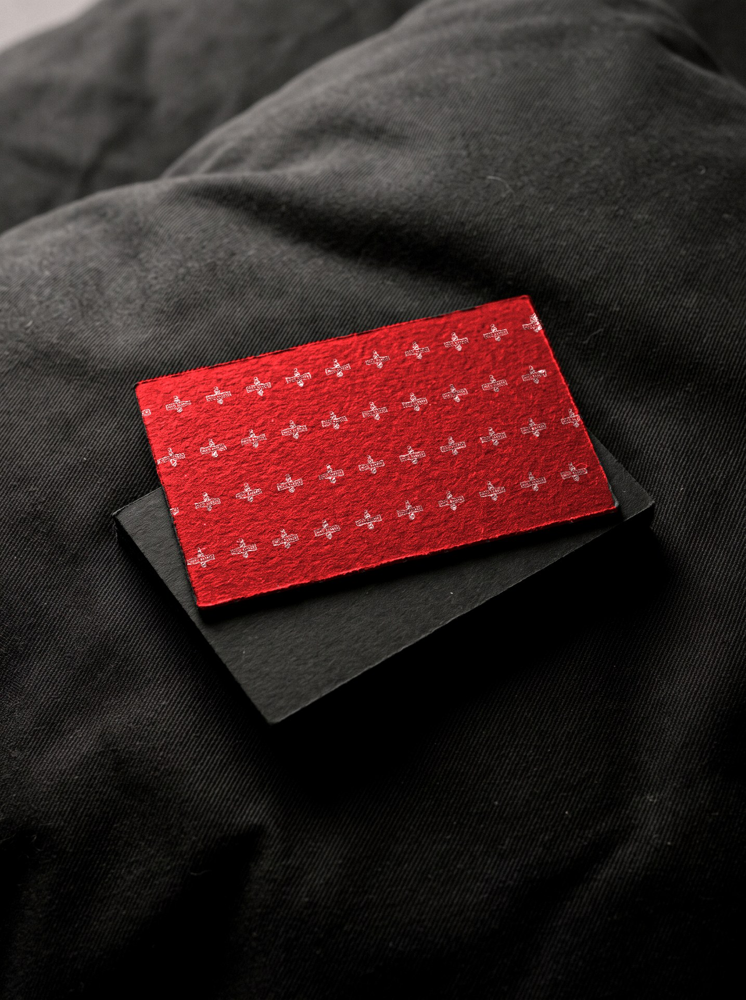
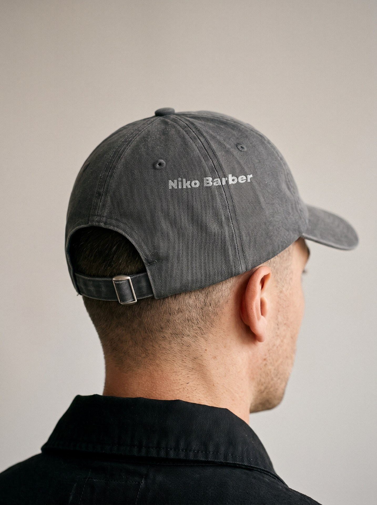
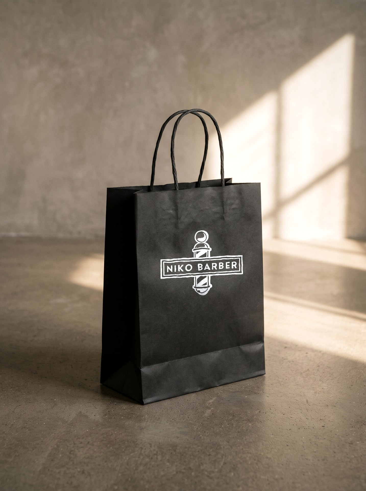
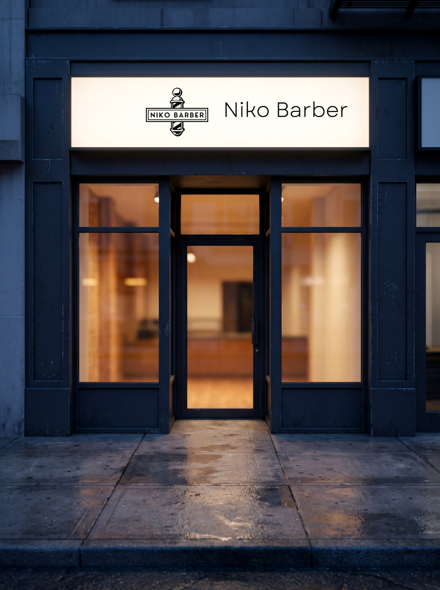
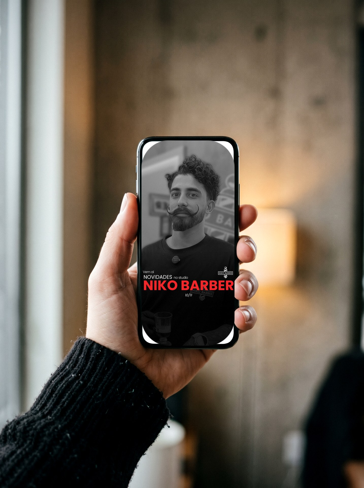
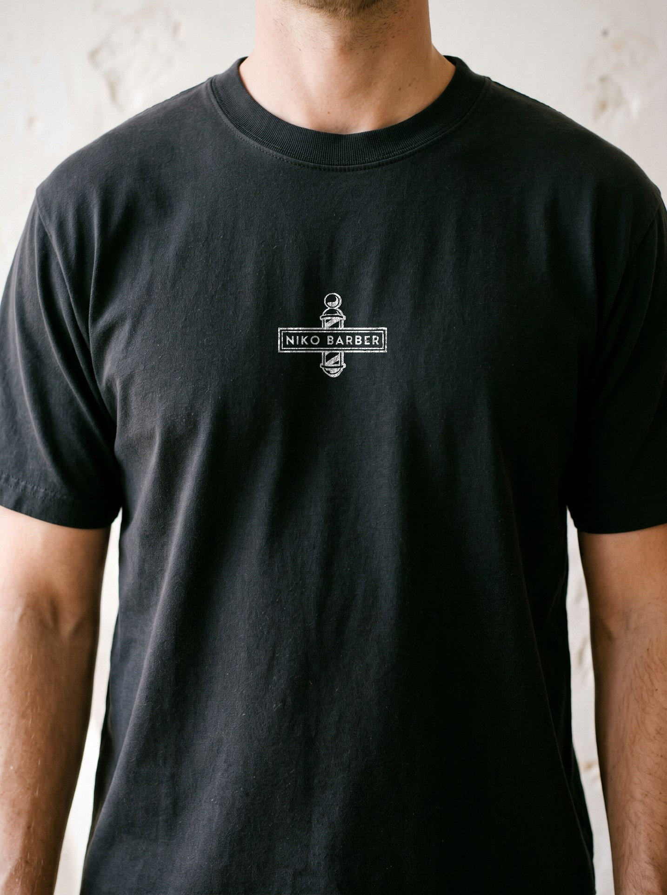

Logo, quatro cores, fontes e textos ficam num kit salvo no navegador. Um kit por cliente, exportável em .json.
Fotos reais de superfícies sem marca. Você marca os quatro cantos e a arte entra em perspectiva, com a luz, as dobras e a textura da foto.
R gera uma variação leve e Shift+R uma agressiva. Você trava o que quer manter e exporta uma peça ou o pacote inteiro do cliente.
Marca, conteúdo e página em três passos, na ordem certa de decisão. Exporta HTML pronto.
→ 02 — FotosImpressão, relevo seco, hot stamping, bordado, luminoso e tela sobre fotos reais.
→ 03 — 3DSete cenas com câmera, luz e cores da marca. PNG até ×4 e vídeo em loop.
→ 04 — ExperimentalCâmera térmica e motion blur sobre imagem e tipografia.
→